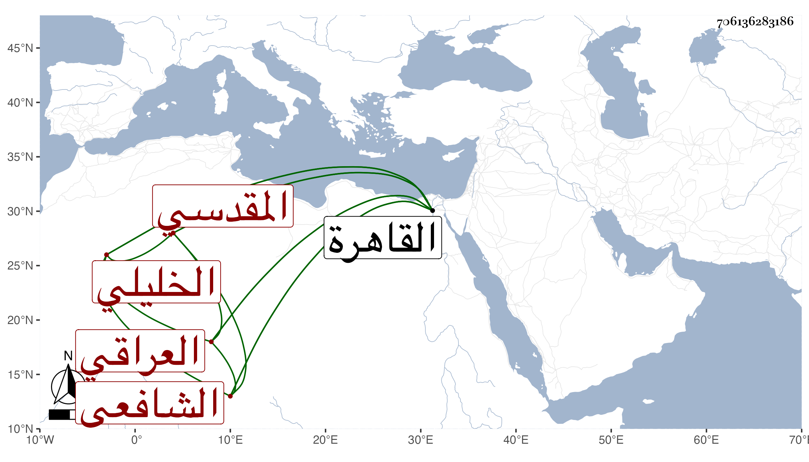

0902Sakhawi.DawLamic.ITO20230111-ara1.EIS1600.706136283186
Biography ID: 706136283186
395
عبد الوهاب بن محمد بن حسن بن محمد بن أبي الوفاء التاج العراقي الأصل المقدسي ثم الخليلي الشافعي نزيل القاهرة . ولد سنة أربع وثلاثين وثمانمائة وأحضر علي التدمري المسلسل بشرطه ثم حفظ كتبا ، وقدم القاهرة في سنة خمسين فسكن الجمالية وقتا ثم الصاحبية عند الشرف المناوي ولازمه وكذا أحمد الخواص والشهاب الأبشيطي وابن حسان وغيرهم وتميز وكتب مجموعا فيه فوائد كل ذلك . مع مزيد انجماعة وترفعه . مات قريب الستين ظنا .
